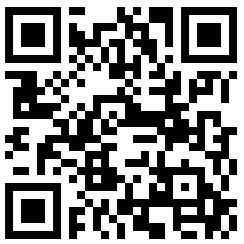

Coloque o dispositivo na superfície
A maioria dos computadores não possui os sensores necessários. Escaneie o código QR para continuar no seu dispositivo móvel.

Como Usar Este Inclinômetro Online para Medir Ângulos
Este inclinômetro online é uma aplicação baseada na web projetada para medir ângulos de superfície (inclinação, arfagem e rolamento) com alta precisão, usando os sensores já embutidos no seu smartphone ou tablet. Ele transforma o seu dispositivo em um poderoso nível de bolha digital, nível de bolha ou clinômetro gratuitamente, sem exigir qualquer instalação de software. Tudo funciona diretamente no seu navegador, tornando fácil medir ângulos e inclinações em qualquer lugar. Use-o como uma ferramenta confiável para medir ângulo, medir inclinação ou verificar arfagem e rolamento.
Funcionalidade Principal
- Medição de Ângulo em Tempo Real: Assim que você conceder acesso ao sensor e pressionar Iniciar, a aplicação lê os dados do acelerômetro e giroscópio do seu dispositivo para calcular a arfagem (eixo X) e o rolamento (eixo Y) em tempo real. Isso fornece uma medição instantânea de ângulo e inclinação.
- Nível de Bolha de Alta Precisão: A interface gráfica central apresenta uma bolha virtual que se move com base na inclinação do dispositivo, fornecendo um guia visual intuitivo para alcançar um nível perfeito. É um inclinômetro gratuito no seu navegador.
- Calibração Zero: O botão Zero permite que você defina qualquer superfície como um ponto de referência (0 graus). Isso é útil para medir o ângulo de uma superfície em relação a outra, em vez de em relação ao nível absoluto. Um recurso perfeito para qualquer ferramenta de ângulo no navegador. Também pode ser usado para ajustar saliências nos seus dispositivos móveis, como câmeras protuberantes.
- Nivelamento sem Visão: Ative o feedback de áudio nas configurações, e seu dispositivo emitirá um bipe quando um nível perfeito for alcançado, permitindo que você nivele superfícies sem monitorar constantemente a tela.
Aviso: Entendendo a Precisão
Esteja ciente de que, embora esta ferramenta ofereça uma maneira conveniente de medir a inclinação, os sensores de um smartphone típico não são projetados para medição de ângulo de grau metrológico. Fatores como a qualidade do sensor, a calibração do dispositivo e até mesmo pequenas saliências na capa do seu telefone podem introduzir erros. Para muitas tarefas de bricolage e de passatempo, a precisão é mais do que suficiente. No entanto, para aplicações profissionais que exigem precisão certificada, recomenda-se um nível de bolha dedicado e calibrado. Esta ferramenta fornece uma medição de ângulo confiável para a maioria das necessidades diárias.
Como Melhorar a Precisão da Medição
Você pode melhorar significativamente a precisão da sua medição de inclinação e compensar o viés do sensor usando um método simples de calibração em duas etapas. Este processo cancela efetivamente a maior parte do erro de desvio de zero inerente do telefone quando você precisa medir um ângulo com melhor precisão.
- Primeira Medição: Coloque o seu telefone na superfície que deseja medir e anote a leitura do ângulo (por exemplo, 8°).
- Segunda Medição: Sem levantá-lo, gire o seu telefone exatamente 180° no mesmo local (de modo que fique "de cabeça para baixo" em relação à sua posição original) e faça uma segunda leitura (por exemplo, 10°).
- Calcule o Ângulo Verdadeiro: O ângulo verdadeiro é a média dessas duas medições. Por exemplo: (8 + 10) / 2 = 9°. Esta é a sua inclinação mais precisa no navegador.
Use o método de rotação de 180° para cancelar erros do sensor e obter medições de ângulo mais precisas.
Como Realizar a Calibração "Zero"
A calibração zero permite que você defina a sua superfície atual como o novo ponto de referência (0 graus), o que é essencial para medir ângulos relativos ou compensar superfícies irregulares. Veja como fazer:
- Posicione o Dispositivo: Coloque o seu smartphone ou tablet firmemente na superfície que deseja designar como sua referência de 0°.
- Estabilize: Certifique-se de que o seu dispositivo está estável e não se move.
- Pressione Zero para calibrar: Toque no botão Zero na interface do inclinômetro.
- Nova Linha de Base: As leituras atuais de arfagem и rolamento serão redefinidas instantaneamente para 0°, estabelecendo esta orientação como sua nova linha de base para todas as medições subsequentes.
A calibração zero define a superfície atual como a referência de 0°, permitindo medições de ângulo relativas.
Ajustando para Câmeras Protuberantes
Os smartphones modernos geralmente têm saliências de câmera que os impedem de ficar perfeitamente planos. Isso pode interferir com medições precisas, mas você pode corrigi-lo facilmente usando o botão Zero, como ilustrado abaixo.
- Posicione e Observe: Posicione o seu telefone na superfície. Observe que a saliência da câmera cria uma inclinação leve e estável, mostrando uma leitura diferente de zero.
- Pressione Zero: Toque no botão Zero. Isso instrui o inclinômetro a tratar a posição inclinada atual do telefone como o novo ponto de referência "0°".
- Meça com Precisão: O visor agora mostrará 0°. O efeito da saliência da câmera é cancelado, permitindo que você faça medições precisas em relação à superfície.
Use "Zero" para compensar a inclinação causada por uma saliência da câmera.
Casos de Uso Detalhados para o Nosso Inclinômetro
Este inclinômetro baseado em navegador é uma ferramenta versátil para medir arfagem e rolamento para muitas tarefas:
- Construção e Carpintaria: Use este clinômetro para garantir que as paredes estejam perfeitamente verticais e os pisos nivelados. Ao enquadrar um telhado, meça a inclinação para garantir que as vigas sejam cortadas e instaladas no ângulo correto. Também é ótimo para definir a inclinação adequada para drenagem em pátios ou calçadas.
- Instalação de Painéis Solares: Para maximizar a geração de energia, os painéis solares devem ser ajustados em um ângulo de inclinação ideal com base na latitude e na estação. Use esta ferramenta para medir a arfagem com precisão durante a instalação, garantindo que seus painéis tenham a orientação correta para o sol para máxima eficiência.
- Bricolage e Melhorias Domésticas: Pendure quadros perfeitamente retos todas as vezes. Ao montar móveis ou instalar armários de cozinha, use o inclinômetro para garantir que tudo esteja nivelado. É também a ferramenta perfeita para medir a inclinação ao configurar eletrodomésticos como máquinas de lavar para evitar desequilíbrio e vibração.
- Fotografia e Videografia: Evite horizontes tortos usando esta ferramenta para nivelar sua câmera em um tripé. Isso é especialmente crítico para fotografia de paisagem, arquitetura e panorâmica, onde linhas retas são essenciais para um resultado profissional.
- Nivelamento de Veículos e Autocaravanas: Verifique os ângulos da linha de transmissão após modificar a suspensão de um veículo. Ao acampar, use-o para nivelar sua caravana ou autocaravana para conforto e para garantir que os aparelhos (como geladeiras) funcionem corretamente. É uma ferramenta útil de medição de inclinação para qualquer configuração de veículo.
- Encanamento e Drenagem: Ao instalar tubos de drenagem, uma inclinação suave e consistente é crucial para o fluxo adequado. Use este inclinômetro online para medir o ângulo com precisão e evitar problemas com bloqueios ou água parada no futuro.
Perguntas Frequentes
Conceda acesso ao sensor, pressione Iniciar Medição e coloque o seu dispositivo na superfície. O inclinômetro exibirá os ângulos de arfagem (eixo X) e rolamento (eixo Y) em tempo real. Use o botão Zero para definir um ponto de referência.
A precisão depende da qualidade do acelerômetro do seu dispositivo. Para tarefas de bricolage e hobby, é altamente preciso. Para precisão de nível metrológico profissional, recomenda-se um nível de bolha calibrado dedicado. Use o método de calibração de rotação de 180° para maior precisão.
Sim, todos os dados do sensor são processados diretamente no seu dispositivo, no seu navegador. Nenhuma informação é enviada para os nossos servidores. As suas medições são completamente privadas.
Você pode usá-lo para instalação de painéis solares, construção, carpintaria, projetos de bricolage, fotografia, nivelamento de veículos, encanamento e qualquer tarefa que exija medição de ângulo ou inclinação.
Coloque o seu telefone na superfície com a saliência da câmera, anote a leitura e pressione o botão Zero. Isso calibra o efeito da saliência da câmera, permitindo medições precisas.
100% Privado e Seguro
Estamos comprometidos com a sua privacidade. Todos os dados do sensor são processados diretamente no seu dispositivo pelo navegador. Nenhuma informação é enviada para os nossos servidores. As suas medições são suas.